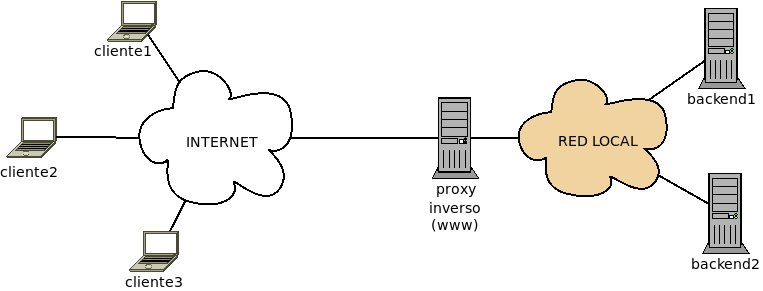

10.2.6.2. Sistemas activos de seguridad¶
10.2.6.2.1. Servidor RADIUS¶
RADIUS es un protocolo de autenticación que permite a un dispositivo de red consultar las credenciales entregadas por un cliente a fin permitir o rechazar su ingreso.

Para llevar a cabo su labor los servidores RADIUS disponde de la lista de credenciales (pares usuario/contraseña) válidos) y la lista de dispositivos de red autorizados a hacerle consultas.
Freeradius es un proyecto de software libre que implementa un servidor RADIUS.
10.2.6.2.2. Servidor proxy¶
Un proxy es una máquina que hace de intermediario en la comunicación entre un cliente y un servidor. Estas comunicaciones se establecen con protocolos de capa de aplicación y, en consecuencia, los proxies interceptan y gestionan tráfico de aplicación. Hay distintos servidores proxy, dependendo de cuál sea el tráfico para el que intermedien. Por ejemplo:
- Proxy DNS, que es el servicio que se encarga de obtener de un servidor DNS las resoluciones de nombres solicitadas por sus clientes y cachearlas a fin de acelerar las solicitudes posterioes. DHCP con dnsmasq es un ejemplo de proxy de este tipo.
- Proxy ARP que consiste en la intermediación de un router a las peticiones ARP de las máquinas de una subred sobre máquinas de otra subred, enviando su propia dirección MAC a fin de que estas dirijan hacia él los paquetes para las máquinas de la otra subredi. Esto evita tener que añadir en los clientes la entrada correspondiente en la tabla de ecnaminamiento.
- Proxies web que intermedian en las peticiones HTTP y HTTPs, son los más habituales y a los que dedicaremos el resto del epígrafe.
Si nos ceñimos al sentido de la intermediación, Hay dos tipos de servidores proxy:
Los servidores proxy (a secas), que son aquellos que intermedian entre los clientes de una red y distintos servidores externos.

Ciñéndonos al tráfico web, el proxy se encarga de intermediar entre las peticiones que los clientes locales hacen a los distintos servidores externos con el fin de:
- Establecer permisos de acceso, cuotas o anchos de banda según los distintos usuarios.
- Filtrar contenidos que la organización considere inapropiados.
- Filtrar contenido considerado spam o publicidad intrusiva.
- Cachear contenido a fin de acelerar las respuestas y ahorrar ancho de banda.
Las tres últimas tareas exigen vigilar el tráfico circulante, lo cual es posible cuando el tráfico es HTTP, ya que la información circula sin cifrar y, por tanto, es accesible al software que se ejecute en el proxy*. Cuando el tráfico es, en cambio, HTTPs la información está cifrada y, en principio, son imposibles de llevar a cabo. Sin embargo, la extensión SNI de TLS envía, al menos, el nombre de dominio sin cifrar, lo cual, posbilita las labores de filtrado, simepre que este se base esclusivamente en el nombre del dominio.
Como alternativa de filtrado a través del nombre de dominio, pueden usarse los sumideros DNS.
Los servidores proxy inversos, que son aquellos que intermedian entre los clientes externos y uno o varios servidores internos.
Los proxies web inversos llevan a cabo, principalmente, las siguientes tareas:
- Si son varios los servidores de respaldo, el balanceo de carga entre todos ellos.
- La absorción de tráfico excesivo (p,e, de ataques DoS).
- El cacheo selectivo de páginas para agilizar las respuestas. Por ejemplo, se pueden cachear cuidadosamente contenidos dinámicos a fin de aligerar la carga de trabajo del servidor web. En caso de que el tráfico sea HTTPs, esto implica trasladar el punto extremo de la conexión cifrada al propio proxy.
Por hacer
Queda pendiente desarrollar el epígrafe práctico sobre proxies. Cuando llegue el momento, muy probable habrá que pasar el texto de este epígrafe allí como introducción y dejar aquí una simple referencia.
10.2.6.2.3. Sumideros DNS¶
Si no se pretende controlar el acceso de los usuarios, sino simplemente filtrar contenidos, son una alternativa bastante sencilla y mucho más ligera al filtrado de dominios mediante la SNI.
Ver también
Consulte el epígrafe sobre bloqueo DNS para saber en qué consisten.
10.2.6.2.4. Honeypots¶
Un honeypot (tarro de miel) es un sistema especialmente diseñado para atraer ataques con el fin de monitorizar y estudiar los ataques y desviar la atención del atacante sobre el sistema principal.
10.2.6.2.5. Análisis de la red¶
Para analizar el estado de la red se usan diversas herramientas:
- Monitores
- Los sniffers son aplicaciones que capturan el tráfico circulante. No se lo apropian sino que se hace una copia con el fin de almacenarlo y estudiar luego cuál es su contenido. tcpdump o wireshark son ejemplos de aplicaciones de este tipo.
- Inspectores de puertos
- Son aplicaciones que analizan cuáles son los puertos en donde escuchan aplicaciones y cuáles son estas. Para el análises desde la propia máquina se usa ss y para el análisis desde distinta máquina nmap.
- Sondas
- Son aplicaciones que comprueban la conectividad. Entre ellas pueden citarse las órdenes ping o traceroute/tracepath.
- Sistemas de detección de intrusos
Son aplicaciones que analizan y recopilan el tráfico de la red, buscan en esos datos patrones típicos de análisis y, si los encuentran, o envían un aviso al administrador (NIDS) o desencadenan una respuesta contra el ataque (NIPS).
La complejidad de estos sistemas supone que consuman muchos recursos, ya que necesitan capturar y analizar constantemente información, y responder con celeridad.
10.2.6.2.6. Cortafuegos¶
Su estudio se pospone al tema siguiente.